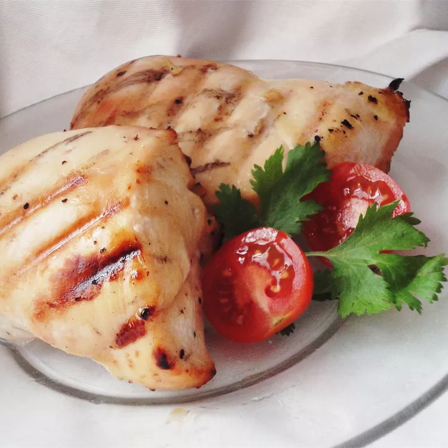

Honey Key Lime Grilled Chicken

Description
When I bought a bottle of Key Lime juice on vacation in Florida, I wondered what I would do with it... Now this recipe is a staple in our kitchen! I hope you enjoy it too! The longer you marinate, the better the sweet-sour combo gets!
Ingredients
- 5 tablespoons key lime juice
- 2 tablespoons honey
- 1 clove garlic, minced
- ½ teaspoon lemon pepper
- 4 skinless, boneless chicken breast halves
Steps
- In a resealable plastic bag, mix the key lime juice, honey, garlic, and lemon pepper. Place the chicken in the bag, seal, and shake to coat. Marinate in the refrigerator at least 30 minutes, turning the bag occasionally.
- Preheat an outdoor grill for high heat.
- Grill the marinated chicken about 8 minutes on each side, until no longer pink and juices run clear. Discard remaining marinade.
Home